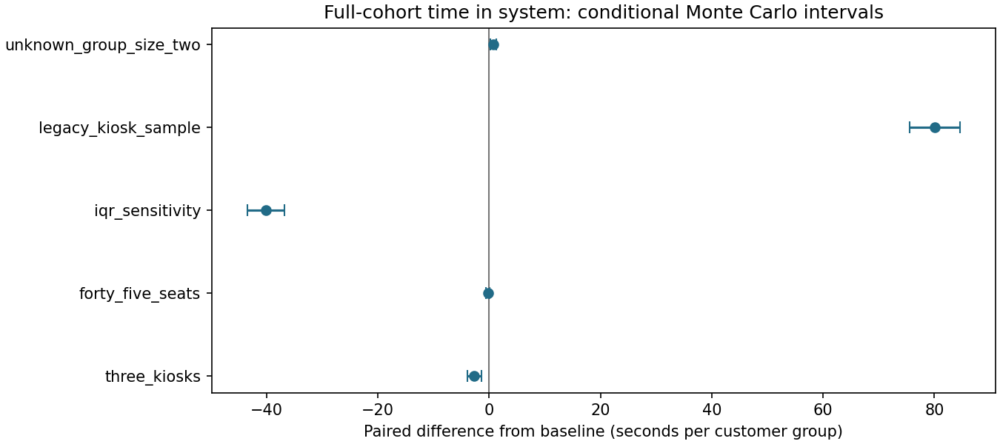
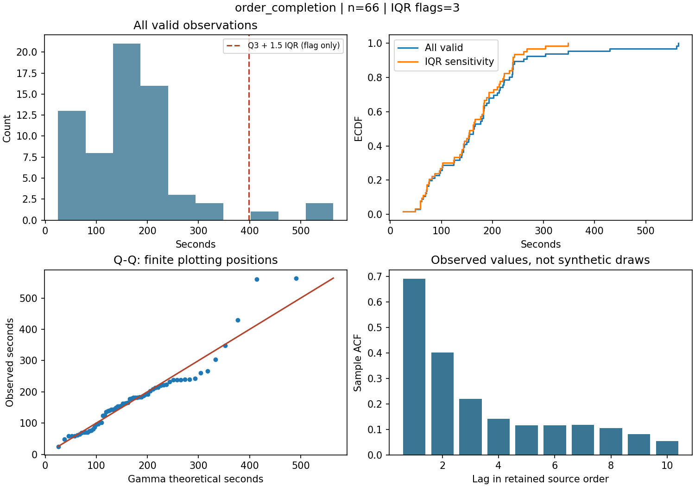
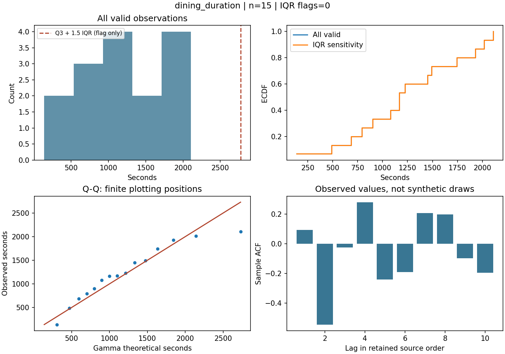
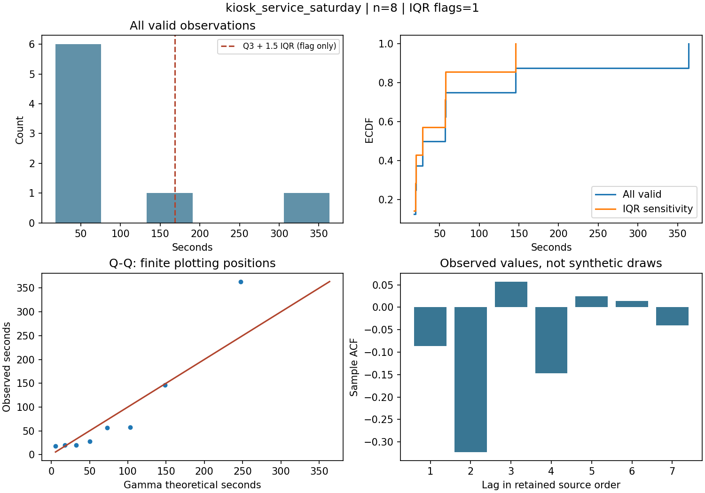
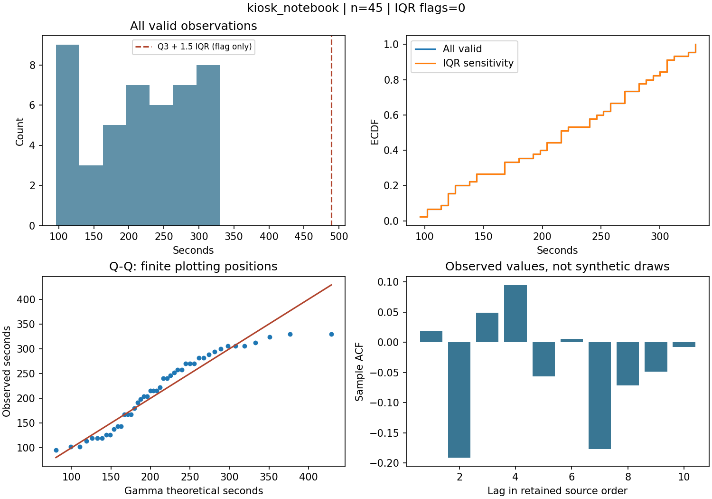
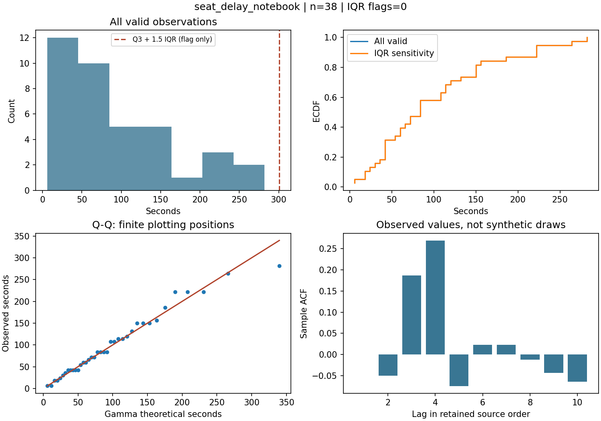
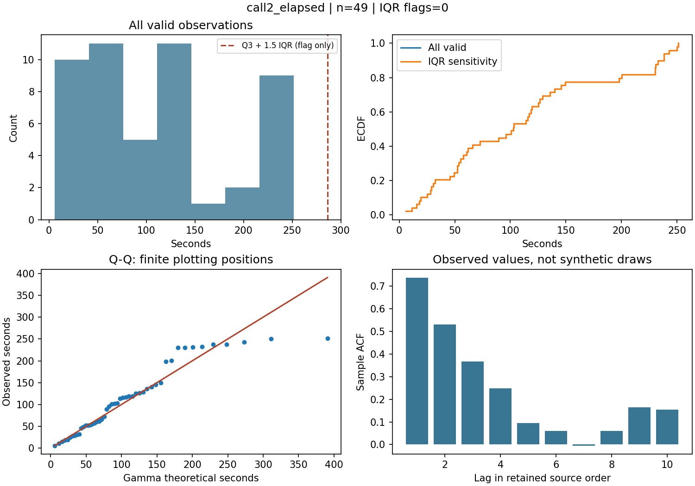

课程项目。项目所有者确认主要负责原始数据采集和 AnyLogic 建模。本次数据流程、诊断修复、Python 参考模型、测试与文档属于新增工作。
使用 Python 3.13.5；固定种子 20261016，6 个情景，每个 100 次，共 600 次运行。到达序列固定为周六表中的 56 组记录，包含顾客、外卖员及一组观察到的离开者。观察窗口 60 分钟，随后停止新到达并排空已有顾客。
测试结果：17 passed, 14 warnings in 1.66s。输入校验与代码版本见 运行记录，完整假设见 各情景配置。
拟合结果包含同一样本内的 AIC/BIC、KS 距离及部分分布的重新拟合自助检验。自助检验按 IID 连续假设计算，未校正观察依赖、舍入和完整记录筛选。统计方法参考。没有以最小指标自动选择唯一“正确分布”。
| 数据集 | 总记录 | 有效记录 | 问题记录 | 单位 | 有效均值 | IQR 标记 |
|---|---|---|---|---|---|---|
| after_arrival_notebook | 80 | 80 | 0 | binary | 0.662 | 不适用 |
| call2_elapsed | 62 | 49 | 13 | seconds | 110.498 | 0 |
| call_to_pickup_evening | 31 | 15 | 16 | seconds | 92.800 | 3 |
| completion_notebook_part2 | 52 | 52 | 0 | seconds | 112.142 | 0 |
| courier_group_interarrival | 29 | 29 | 0 | seconds | 117.931 | 0 |
| customer_group_interarrival | 24 | 24 | 0 | seconds | 132.500 | 1 |
| dine_in_notebook | 80 | 80 | 0 | binary | 0.588 | 不适用 |
| dining_duration | 15 | 15 | 0 | seconds | 1225.800 | 0 |
| kiosk_notebook | 45 | 45 | 0 | seconds | 217.067 | 0 |
| kiosk_queue_evening | 2 | 2 | 0 | seconds | 0.000 | 0 |
| kiosk_service_evening | 2 | 2 | 0 | seconds | 150.500 | 0 |
| kiosk_service_saturday | 8 | 8 | 0 | seconds | 88.666 | 1 |
| order_completion | 66 | 66 | 0 | seconds | 174.030 | 3 |
| order_interarrival | 65 | 65 | 0 | seconds | 35.108 | 3 |
| order_prefix35 | 66 | 66 | 0 | binary | 0.758 | 不适用 |
| pick_leave_flag | 80 | 80 | 0 | binary | 0.338 | 不适用 |
| pickup_to_leave_sunday | 8 | 8 | 0 | seconds | 1470.000 | 0 |
| seat_delay_notebook | 38 | 38 | 0 | seconds | 99.158 | 0 |
观察到达组 → 已记录或按显式概率分配点单方式 → FIFO 点单机 → 经验订单完成延迟 → 取走或 FIFO 等待整组座位 → 就餐 → 离开。外卖员使用独立取餐延迟路径。没有额外厨房容量约束；订单完成延迟已包含历史拥堵，不能再把它当成纯制作时间叠加厨房排队。
等待时间、食物可取时间和系统逗留时间分别记录。系统逗留时间包含就餐，不能称为“排队等待时间”。先保存观察窗口结束时的未完成顾客，再排空计算完整入场群体统计。报告同时保留受窗口限制的停留时间与仅已完成顾客的均值。
| 情景 | 完整入场顾客组平均逗留 / 分钟 | 使用机器顾客组平均机前等待 / 秒 | 堂食顾客组平均座位等待 / 秒 | 窗口末剩余组数 |
|---|---|---|---|---|
| 基线：全部有效样本 | 20.803 | 5.034 | 0.275 | 4.00 |
| 点单机 2 → 3 台 | 20.758 | 0.287 | 0.201 | 4.00 |
| 座位 35 → 45 个 | 20.799 | 5.034 | 0.000 | 4.00 |
| IQR 筛选敏感性 | 20.134 | 0.371 | 0.181 | 3.61 |
| 改用旧 Notebook 点单时长 | 22.138 | 29.574 | 0.211 | 4.32 |
| 缺失同行人数按 2 人 | 20.815 | 5.034 | 1.100 | 4.00 |
以下差值为“情景减基线”，单位为秒/顾客组。同一重复使用相同随机数。95% 区间仅衡量固定输入及假设下的仿真随机性，不包含采样和模型不确定性。IQR 行改变输入样本，不代表门店运营改善；不同样本来源与缺失人数行也只表示敏感性。
| 情景 | 平均逗留时间差 / 秒 | 95% Monte Carlo 区间 |
|---|---|---|
| 点单机 2 → 3 台 | -2.697 | [-3.958, -1.437] |
| 座位 35 → 45 个 | -0.251 | [-0.550, 0.048] |
| IQR 筛选敏感性 | -40.143 | [-43.473, -36.812] |
| 改用旧 Notebook 点单时长 | 80.076 | [75.595, 84.556] |
| 缺失同行人数按 2 人 | 0.726 | [0.214, 1.238] |

全部逐次结果 · 基线第 1 次逐组结果 · 基线第 1 次事件与资源日志 · 全部指标配对区间
原始材料没有足够信息唯一确定预点单剩余时间、放弃等待、初始占座、订单与人数的对应关系。因此参考模型采用配置中列出的假设。跨日期数据被用于不同处理环节，结果是课程模型实验，尚未获得外部观察验证。
原 ALP 及未运行验证的修订候选保留在本地，不随本仓库发布。原模型中的满座分流、提前占座、条件概率、到达参数及超时解释尚未完成逐项验证；Python 参考模型与原模型的运行等价性也尚未验证。此报告仅记录 Python 实验。





